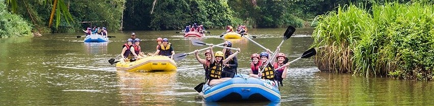
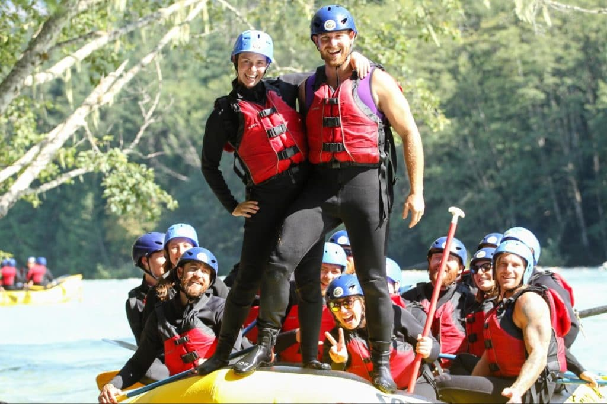
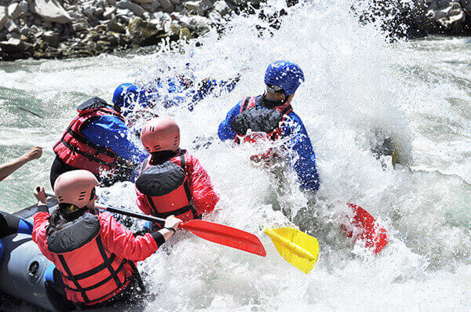
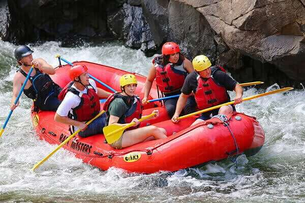
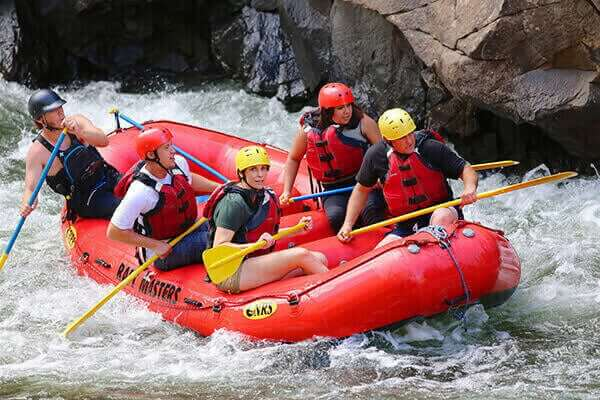

At Splash White Water Rafting, we exist to connect people with the thrill of nature’s raw beauty through unforgettable whitewater adventures. Our mission is to provide safe, exciting, and eco-friendly rafting experiences that inspire adventure seekers to embrace the wild, build memories, and cultivate a deep respect for our rivers and environment.


SPLASH WHITE WATER RAFTING
History
Splash White Water Rafting was founded in 2010 by a group of adventure enthusiasts who shared a deep passion for whitewater rafting and a commitment to preserving natural waterways. Starting as a small, family-operated business offering guided rafting tours on the nearby rivers, SPLASH quickly gained a reputation for thrilling, safe, and eco-conscious adventures. Over the years, the company expanded its operations, exploring more rivers and introducing innovative experiences such as moonlit rafting and multi-day excursions. Today, SPLASH remains dedicated to its roots, blending heart-pounding excitement with a focus on sustainability, community, and respect for nature.
Adventure Awaits You
 
